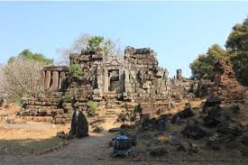
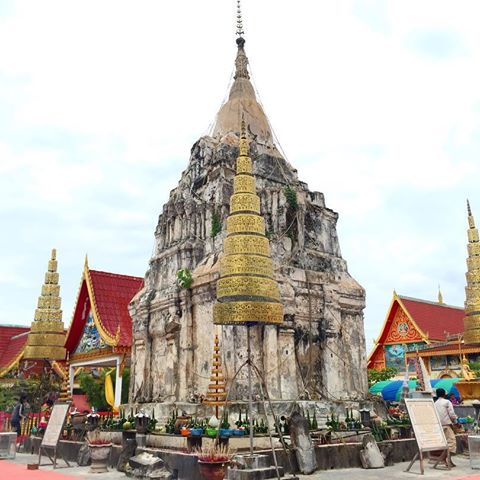

ເຮືອນຫີນ
 |
ເຮືອນຫີນ
ຕັ້ງຢູ່ແຄມຝັ່ງແມ່ນ້ຳຂອງຫ່າງຈາກສະຫວັນນະເຂດ ມາທາງທິດໃຕ້ປະມານ 90 ກິໂລແມັດ ຜາສາດເຮືອນຫີນເປັນຊາກຜາສາດຂອມເກົ່າແກ່ອາຍຸກວ່າພັນປີຢູ່ໃນ ເມືອງໄຊພູທອງ
ທີ່ຕັ້ງ: ບ້ານເຮືອນຫີນ, ເມືອງໄຊພູທອງ, ໄລຍະຫ່າງຈາກຕົວເມືອງ: ປະມານ 10 ກິໂລແມັດ ການເຂົ້າເຖິງແຫລ່ງ: ສະດວກ ພາກສ່ວນຄຸ້ມຄອງ : ຫ້ອງການ ຖວທ ເມືອງຈັດລະດັບແຫລ່ງທ່ອງທ່ຽວ: ຂັ້ນເມືອງສິ່ງອໍານວຍຄວາມສະດວກ: ເສັ້ນທາງ, ຮ້ານກິນດື່ມ ຂະໜາດນ້ອຍ, ຫ້ອງນໍ້າເຮືອນຫີນ ແມ່ນຮ່ອງຮອຍທາງດ້ານປະຫວັດສາດ ເຊິ່ງສ້າງຂຶ້ນໃນ ອານາຈັກສີໂຄດຕະບູນ ເຊິ່ງເປັນ ອານາຈັກທີ່ໜ້າເກງຂາມ ຂອງອານາຈັກ ໃກ້ຄຽງ. ໃນປີ ຄສ 557 ນັ້ນ ມີຂຸນອັງຄະຣາດ ແລະ ອົມມະຣາດ ສອງອ້າຍນ້ອງນໍາພາສ້າງ ປະສາດຫີນຂຶ້ນ ເພື່ອເປັນທີ່ເຄົາລົບກາບໄຫວ້ ຂອງສາສະໜາພາມ, ແຮງງານໃນການກໍ່ສ້າງ ແມ່ນໄດ້ເກນເອົາເຜົ່າຊົນຕ່າງໆ ມາຈາກ ອານາຈັກໂຍນົກເງິນຍາງ ມາເປັນຂ້າທາດເຂົາເຈົ້າຫຸບຫອບ ຄອບຄົວມາພ້ອມ ແລ້ວອາໃສຢູ່ ຕາມຖໍ້າຫີນຕ່າງໆ ເພື່ອຊົ້ນແດດຊົ້ນຝົນ, ສ່ວນຂຸນອັງຄະຣາດ ຜູ້ນໍາພາສ້າງ ໄດ້ເຈາະ ອຸໂມງ ຢູ່ກະໂຕພື້ນຜາສາດຫີນ, ກ້ອນຫີນທີ່ນໍາມາສ້າງ ໄດ້ເອົາສິ່ວເຈາະມາ ຈາກຫລາຍບ່ອນ ເຊິ່ງບ່ອນທີ່ໃຫຍ່ທີ່ສຸດ ແມ່ນຢູ່ບ່ອນເບື້ອງ ຕາເວັ້ນຕົກ ຫ່າງຈາກ ປະສາດຫີນ ປະມານ 1 ກິໂລແມັດ, ເອີ້ນວ່າ “ວັງເຮືອ” ຍ້ອນວ່າຮ່ອງຮອຍ ທີ່ສິ່ວເຈາະເອົາຫີນນັ້ນ ໄປສ້າງເຮືອນຫີນ ເຊິ່ງໃນປະຈຸບັນນີ້ ຍັງມີຮ່ອຍຮອງເປັນລັກສະນະ ຮູບຄ້າຍຄືເຮືອ ບາງຈຸດຍັງມີເສດເຫຼືອ ຈາກກ້ອນຫີນ ທີ່ເຈາະອອກມາ ແລະ ຍັງບໍທັນໄດ້ເອົາໄປສ້າງຍັງຍາຍ ເປັນຈໍານວນຫຼາຍ, ເພິ່ນສ້າງຈົນຮອດປີ ຄສ 700 ກໍ່ໜົດ ສະໄໜລາສະວົງ, ຍ້ອນມີພາກສ່ວນອື່ນ 190 ມາຢຶດຄອງແທນ ເປັນອັນວ່າ ຢຸດຕິການກໍ່ສ້າງ ຜາສາດຫີນ ສະນັ້ນ ຜາສາດຫີນ ຈຶ່ງມີຮູບຊົງບໍ່ສໍາເລັດ ຈົນເຖິງປະຈຸບັນນີ້.
# ພະທາດໂພນ
 |
ພະທາດໂພນ: ຕັ້ງຢູ່ເສັ້ນທາງດຽວກັນ ທີ່ຈະໄປຜາສາດເຮືອນຫີນ ຫ່າງຈາກສະຫະຫວັນນະເຂດ ປະມານ 65 ກິໂລແມັດ. ພະທາດໂພ່ນ ປະດິດສະຖານຢູ່ວັດເຈຕິຍາຣາມ ບ້ານໂພນທາດ ເມືອງໄຊພູທອງ ແຂວງສະຫວັນນະເຂດ.ພະທາດໂພນເປັນສະຖານທີ່ສັກສິດຂອງເມືອງໄຊພູທອງ ອົງເຈດີ ເປັນຊົງກົມສີຂາວຂະໜາດໃຫຍ່ ລັກສະນະຄ້າຍພະທາດໝາກໂມທີ່ຫລວງພະບາງ ກ່າວກັນວ່າສ້າງມາ 2000 ກວ່າປີແລ້ວ.
ສະໄໝພະເຈົ້າລ້ານຊ້າງຊຽງທອງ ສະເຫວີຍລາຊະສົມບັດ ແມ່ນສົມເດັດພະເຈົ້າພຸດທະວົງສາ ໄດ້ມີສັດທາພ້ອມໄພ່ຟ້າຂ້າແຜ່ນດິນ ໄດ້ກໍ່ສ້າງພະທາດໂພ່ນລູກນີ້ຂຶ້ນ ເພື່ອໄວ້ເປັນປູ ຊະນິຍະສະຖານອັນສຳຄັນແກ່ກຸລະບຸດຜູ້ເກີດສຸດທ້າຍພາຍຫຼັງ ແລະ ເປັນບ່ອນສັກກາລະບູຊາ ເຄົາລົບນົບໄຫວ້ຂອງຊາວພຸດທະສາສະນິກະຊົນທົ່ວໄປ ແລະ ຍັງທຳນາຍໄວ້ວ່າ ຈັກມີເມືອງເກີດຂຶ້ນໃນສະຖານທີ່ນັ້ນ ດັ່ງຕຳນານກ່າວໄວ້ວ່າ: ເມື່ອພະພຸດທະອົງສະເດັດປະລິນິບພານລ່ວງໄດ້ 8 ປີ ປາຍ 7ເດືອນ ມີພະອໍລະຫັນສາວົກທັງຫຼາຍ 500 ຮູບ ພ້ອມກັນກັບທ້າວພະຍາທັງຫຼາຍໃນຊົມພູທະວີບ ໄດ້ແບ່ງປັນກັນມາສ້າງພະທາດ ສີ່ລູກນີ້ຂຶ້ນ ມື້ໜຶ່ງວັນດຽວກັນຕາມພູມແດນຂອງໃຜລາວ ທາດສີ່ລູກນັ້ນຄື: 1. ພະທາດພະນົມ ບໍຣົມເຈດີ 2. ພະທາດອີງຮັງ 3. ພະທາດໂພ່ນ 4. ພະທາດເຊີງຊຸນ ( ຢູ່ໃກ້ໜອງຫານປະເທດໄທ ); ສ່ວນພະທາດ ໂພ່ນລູກນີ້ ໄດ້ມີລູກທາດອ້ອມຢູ່ຖ້ານລຸ່ມ 7 ລູກ ປະເສີດຍິ່ງໜັກ ໄດ້ສ້າງເມື່ອເດືອນ 12 ວັນພຸດ ພ.ສ 236 ໂດຍມີສົມເດັດພະພຸດທະວົງສາເປັນລາຊະອຸປະຖຳສືບຕໍ່ມາເພິ່ນຈະຈັດງານບຸຸນສະເຫຼີມສະຫຼອງພະທາດໃນມີ້ຂນ 15 ຄໍ່າ ເດືອນສາມ ( ເດືອນສາມເພັງ ) ຂອງທຸກໆປີ ພ້ອມກັບງານບຸຸນສະເຫຼີມສະຫຼອງພະທາດສີໂຄດຕະບອງ, ຜາສາດຫີນວັດພູ,ເຮືອນຫີນ, ພະທາດພະນົມ ໆລໆ. ພ້ອມນັ້ນຍັງມີການຈັດງານຕະຫຼາດນັດ ແລະ ການປະກວດນາງສາວໝາກໂມຫວານອີກດ້ວຍ.
ຈາກທາງເລກທີ 13 ເຂົ້າໄປຫາບ້ານທາດຕາມທາງຮາບພຽງທີ່ລາດຢາງໃໝ່ໆ ປະມານ 12-13 ກິໂລແມັດ ໃຊ້ເວລາບໍ່ດົນປະມານ 20-30 ນາທີກໍ່ຮອດວັດບ້ານທາດ ສະຖານທີ່ປະດິດສະຖານພຣະທາດໂພ່ນ. ສິ່ງແຮກທີ່ປະທັບໃຈເມື່ອເຫັນເມື່ອຮອດບ້ານ ນອກ ຈາກຖະໜົນຫົນທາງທີ່ສວຍງາມ ມີໄຟຟ້າເຍືອງທາງທີ່ບົ່ງບອກເຖິງຄວາມຈະເລີນຂອງບ້ານນີ້ແລ້ວ ຍັງເຫັນວັດທີ່ກວ້າງຂວາງ ສວຍງາມ, ມີສະຖານທີ່ບຳເພັນທຳກິດທາງສາດສະໜາຄົບຊຸດ ສົມເປັນທີ່ໜ້ານັບຖືສັກກາ ລະບູຊາອີຫຼີ..
>